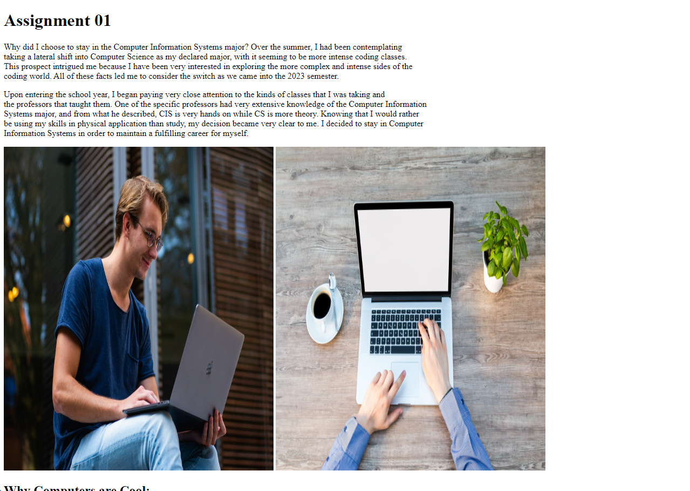

CSCE 242: Web Applications
Joshua Cook
This Web Applications class is designed to teach students the
fundamentals of creating, developing, and updating a website.
We will learn techniques to utilize proper code, and the
benefits of having good organization while creating a new website.
Assignments:
Assignment 01 - Basic HTML
In this assignment, we learned basic HTML syntax in order to create a small beginner page.
Assignment 02 - Basic CSS

In this assignment, we practiced basic CSS syntax by creating a page of our own design.
Assignment 03 - Page Layout
In this assignment, we practiced the CSS flexbox features to create a web page.
Assignment 05 - Recreating CSS Page
In this assignment, we were tasked with recreating the University of South Carolina research web page.
Assignment 06 - JavaScript Assignment

In this assignment, we practiced basic Javascript syntax and features.
Assignment 07 - Conditionals

In this assignment, we practiced conditionals in Javascript and their uses.
Assignment 08 - Loops
In this assignment, we practiced loops and increasing values using intervals.